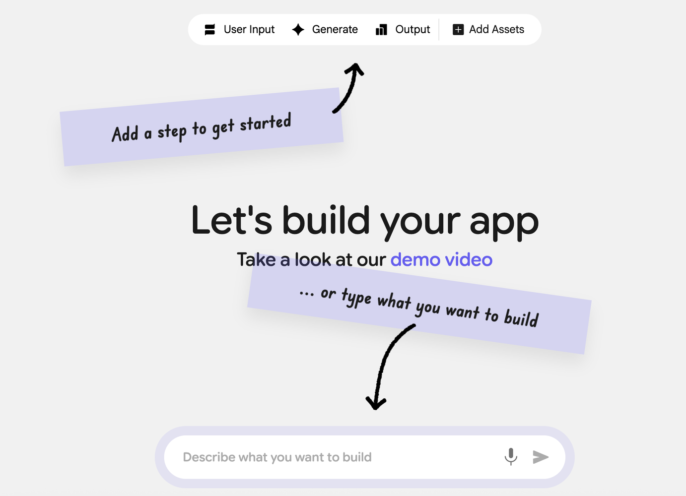
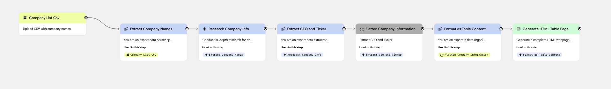
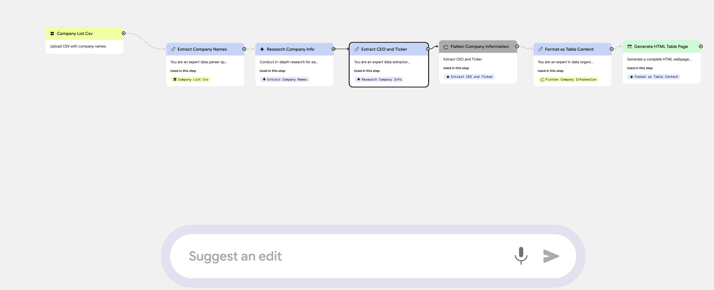
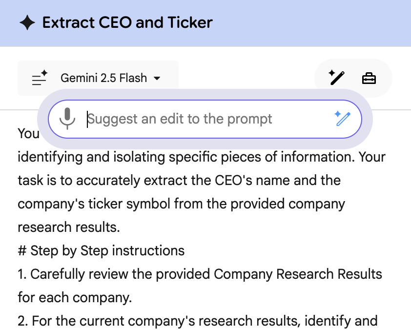
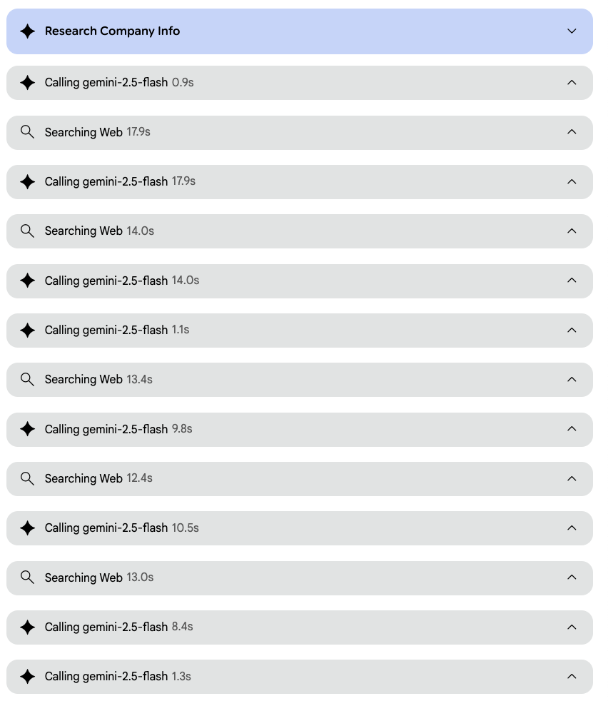

Agent Builders - A new UI paradigm

Over the last couple years, I have spent a lot of time working with various Agent Building tools and my approach has evolved. Initially, I was writing prompts by hand. Then I started "Vibe Prompting" and when MCP came out, I was using Claude to write, test and debug my prompts.
My productivity skyrocketed and I could build agents much faster but I remember wondering why I had to switch between Claude / OpenAI and my agent building tools. Wouldn't it be great if I could just "vibe prompt" my way into building agents. Well last week, Google came out with Google Opal and it is almost like they read my mind.
This is what the home screen looks like -

You can manually build your agent (they call it "mini-app".. not sure about the branding) by dragging and dropping steps (the usual - Input, Generate, Knowledge (Assets), Output) or "Type what you want to build". Just like that I don't need Claude/OpenAI to vibe prompt and then build the agent in an agent builder tool.
Initially I thought it would generate agents that would be more demo-ware than actual working agents, but I was surprised. I does a really good job of building fully functional agents.
Here is an agent it generated to parse a CSV file containing a list of companies and then generate an output that returns the companies, their ticker symbol and name of the CEO. The agent itself is a very simple agent, but I was more curious about how the product worked.

It not only generated the entire workflow, but it also generated all the underlying prompts, list processing logic, formatted HTML output - all in 1 shot. Here is a link to the agent if you want to try it out.
Here are the prompts it generated (we are definitely getting to a place where prompt engineering will be done by the LLMs and not humans).
Extract Data from CSV
Company Research
Extract CEO and Ticker from Research
Format the output as HTML
I have worked with "Autonomous Agent" products like Deep Research where you just give it the task and goal and it figures out the steps and executes them and returns your output. The downside here is that you don't get to edit the execution. On the other hand the "Agent Builder" products, let you define everything by hand but lack the prompting interface (for now). This hybrid approach gives us the best of both worlds.
For example, one thing I noticed is that the agent it generated is using Deep Research to find the name of the CEO and ticker symbol. I know that this is unnecessary and slow. Since I can see each step, I can just go and edit the step that is using Deep Research and ask it to use Gemini Flash with Web Search and this works much faster.
Here is another way that Google has seamlessly integrated Vibe Prompting into the agent building process. You can edit the agent definition by prompting at the agent level or you can do into a step and just edit the prompt for that step. This makes it really easy to now edit the agent definition and get it to do what you want.


Another feature that I found really valuable is how Opal handles list processing. If you think of this from a programming standpoint (using our list of companies example), I would load the list into an array and then I would need some kind of loop processing that would then execute the steps to search for the CEO and ticker and then repeat this for each item in the list. With Opal, you just say that in the prompt and it automatically spawns multiple generates and web searches.
This is the prompt
This is what the console view looks like (where you can see the steps the agent is taking).

The bottomline is that it does make agent building easier for the masses. A lot of the complexity is hidden from the user. That being said, it has the same issue that Vibe Coding has. If you don't understand what it is generating, you can run into issues / go around in circles.
Also, this is a beta product and the use cases are limited (for now). If you have use cases that just work off of web data or data in you Google Drive, this will work great. Other limitations (which I assume they will end up tackling.. did I say this is in beta), no ability for MCP integration or API integration (will expand use cases a lot), no ability to call an agent via an API (to include in a multi agent workflow) and I am not sure about data security / privacy etc. but I do think this will be UI paradigm for a lot of Agent Builder applications.